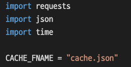
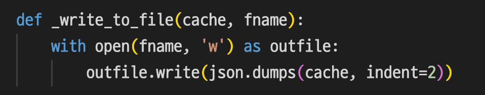
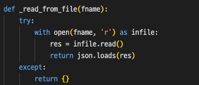
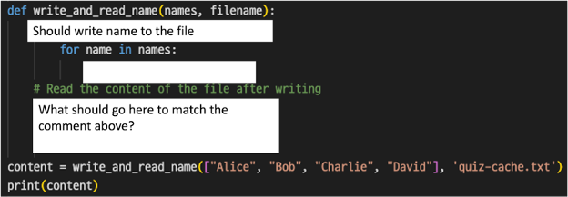
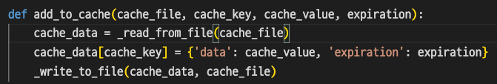
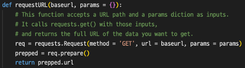
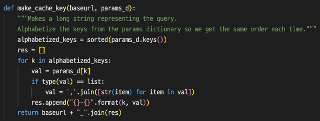
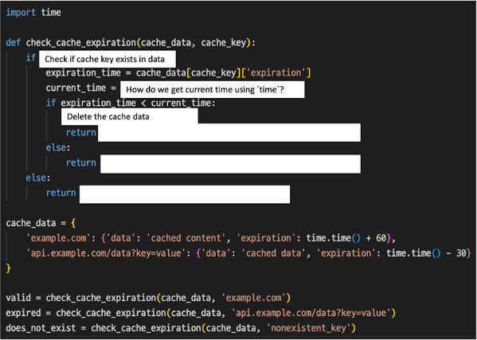

01-Introduction
Why do we use caching?
Caching allows us to remember information that we get back from a source of data. By using caching, we don’t need to make another request for the same information.
How does caching work?
When we cache data, we have two options to approach the data. First, the internet and second, the cache. The cache starts empty at first, and after retrieving the data from the internet, our cash will associate the keyword of that data and the value from the internet in our cache. When you try to access the exact same data, you don’t need to visit all the way back to the internet again. You can just visit our cache, which retains the data.
02-private-functions
Import and Declare global variables

Why do we need this code?
First, we import all the libraries we need. Second, we declare a global variable.
Explanation
-
Import `requests` and `json`
- Declare a global variable
- We use one cache file throughout our project. By declaring the cache file global, we can reference it anywhere in our project.
- Name the cache data ‘CACHE_FNAME’ and save it as a JSON file.
Now we have the file, so we need some functions to help us process it:
- Store cached data in the file
- Read the file to see what data was cached
Write to file

Why do we need this function
This code opens the file `fname` in write mode, which enables writing something in the file. We declared this function as a private function, therefore, this function will be called internally. We need this code to write the cache information to remember the data. After we write the cache data down, we can retrieve the data later on.
The first input parameter 'cache' represents the cached data, and the second one 'fname' represents the file where we're going to store the data. So the cached data is converted to a JSON formatted string first, and then it's written to the file.
Explanation
This function takes two inputs: 'cache’ and ‘fname.’
-
with open(fname, 'w') as outfile
opens a file named `fname` in write mode ('w'). The with statement is used to ensure that the file is properly closed after it is used. By representing the opened file as `outfile`, we can perform operations (writing) on it in the following line.
-
outfile.write(json.dumps(cache, indent=2))
This line writes the content of the cache variable to the file in a specific format. `json.dumps(cache, indent=2)` converts the cache data into a JSON-formatted string.
- The `indent=2` argument makes the JSON string nicely formatted with indentation, making it easier to read.
Read from file

Why do we need this function
This function opens the file `fname`, reads it and returns it as a python file. We will call this function later on to read cache data. This is also a private function.
Explanation
-
try: and except:
These are part of Python's error handling mechanism. We use the try block to write code that might cause an error, and if an error occurs, the program jumps to the except block to handle the error gracefully.
-
with open(fname, 'r') as infile:
This line opens the file specified by the fname variable in read mode ('r'). The with statement is used to ensure that the file is properly closed after it is used. The file is represented by the infile variable, and we can perform operations on it within the indented block.
-
res = infile.read()
This line reads the entire contents of the file and stores it in a variable called res. The read()
method is used to read the data from the file.
-
return json.loads(res)
This line converts the data read from the file (stored in the res variable) from JSON format to Python data structures. The json.loads()
function is used to parse the JSON data and convert it into Python data like dictionaries or lists.
-
except:
If there was an error while reading the file or parsing the JSON data (e.g., the file does not exist or the data is not in valid JSON format), the code inside the except
block will be executed.
-
return {}
If an error occurs, the function will return an empty dictionary ({}) as a default value. This means that if something goes wrong while reading the file or parsing JSON, the function will return an empty dictionary instead.
Quiz
- Fill in the blanks and re-write the function to make it run as described below.

You are given a list of strings containing names of people, and you need to write a function named write_and_read_names(names, filename)
that takes this list of names and writes each name to a new line in a file specified by filename. You can use any name for the filename.
Write the write_and_read_names(names, filename)
function below and check whether input as
["Alice", "Bob", "Charlie", "David"]
returns:
Alice
Bob
Charlie
David
Remember to put the return value to a variable named content.
03-update-cache
Add to cache

Parameters
This function add_to_cache takes four inputs:
- cache_file and cache_key: a unique identifier for the cached data
- cache_value: the response data
- expiration: expiration time
- The expiration time specifies how long the data is considered valid in the cache. Once the expiration time has passed, the cached data is considered stale and should no longer be used.
Why do we need this code
This function adds a new key and value pair to our cache dictionary. We use `_read_from_file` to convert the cache into a Python dictionary, add the retrieved data to it, and then convert it back to a JSON file using `_write_to_file`. This function allows us to add or update data in the cache, ensuring that the cache file reflects the latest information.
Explanation
-
cache_data = _read_from_file(cache_file)
This line calls _read_from_file function that we declared above and assigns its result to a variable named temp_cache. The function reads the content of the file specified by cache_file and converts it into a Python data structure (e.g., a dictionary) using JSON parsing. The resulting data is stored in the cache_data variable.
-
cache_data[cache_key] = {‘data’: cache_value, ‘expiration’: expiration}
This line adds a key-value pair in the cache_data dictionary. The `cache_key` is the key of the cache dictionary, and the value is a dictionary that has two data: ‘data’ and ‘expiration.’
-
_write_to_file(cache_data, cache_file)
This line calls the _write_to_file that we declared to write the updated temp_cache dictionary back to the cache file(cache_file).
Clear Cache
def clear_cache(cache_file=TEMP_CACHE_FNAME):
_write_to_file({}, cache_file)
Why do we need this function
We need this function when we want to empty the cache dictionary we created. It uses the `_write_to_file` function to overwrite the content of the cache file specified by `cache_file` with an empty dictionary, which means the cache dictionary will become an empty dictionary. The CACHE_FNAME will only contain {} after it’s done writing because we’ve cleared the cache and we can write new data to it as needed.
Explanation
_write_to_file({}, cache_file) The function should take an empty dictionary {} as the cache and write it to the cache file CACHE_FNAME.
Quiz
- Which function is responsible for adding data to the cache along with its expiration time?
add_to_cache()
_write_to_file()
clear_cache()
_read_from_file()
- What is the purpose of the
clear_cache()
function?
- To read data from the cache file.
- To write data to the cache file.
- To remove all data from the cache file.
- To add data to the cache file.
04-RequestURL-and-MakeCacheKey
Request URL

Why do we need this code
This function uses the `requests` library we imported at the beginning. By using `requests`, we’re making an HTTP request by using the `baseurl` and `params`, and fetching the full URL of the data we want to get as a result.
We will call this function to store the full URL as a cache value in the cache dictionary later on.
Explanation
req = requests.Request(method='GET', url=baseurl, params=params)
Here, we create an HTTP request object using the provided baseurl and parameters. The method 'GET' indicates that we want to retrieve data (GET request). We use the baseurl as the starting point for the request, and the params dictionary. `params` contains additional information that may modify the request.
prepped = req.prepare()
This prepares the request by converting it into a format that can be sent over the internet. It takes the request object and prepares it for execution.
return prepped.url
Finally, we return the full URL of the data we want to get. This URL includes the baseurl and any parameters, forming a complete request.
Make key for the ache dictionary

Why do we need this code
The second function `make_cache_key` is used to create a long-string key that represents the query. This is the unique identifier for data in the cache file.
This function takes the base URL baseurl and the dictionary of parameters params_d as input. First, it alphabetizes the parameters into sorted key-value parameter pairs, to ensure a consistent order for the same URL with different ordered parameters. Then, it constructs the key by combining the base URL and the sorted key-value parameter pairs.
The unique cache key created will be stored in the cache dictionary and later be referenced.
Example of the output
This is an example of how to create the key based on the base URL and parameters:
base_url = 'https://api.example.com/data'
params = {'param2': 'value2', 'param1': 'value1'}
make_cache_key(base_url, params)
And the output should be:
https://api.example.com/data_param1-value1_param2-value2
Explanation
alphabetized_keys = sorted(params_d.keys())
The function starts by creating a new list called alphabetized_keys. This list contains all the keys from the params_d dictionary, but they are sorted in alphabetical order. This is done to ensure that the cache key is consistent and predictable, regardless of the original order of the keys in the dictionary.
res = []
The function then creates an empty list called res, which will be used to store the parts of the cache key.
for k in alphabetized_keys
Next, the function iterates through each key (in alphabetical order) in the alphabetized_keys list. For each key, it checks if it is not in the private_keys list. If the key is not private, it proceeds to construct the cache key.
if type(val) == list:
val = ','.join([str(item) for item in val])
The value associated with the current key is retrieved from the params_d dictionary and stored in the variable val. If the value is a list, the function converts it into a string representation by joining its elements with commas. This is done to handle cases where the value is a list of items.
res.append(“{}-{}”.format(k, val))
The key and its value are then combined using a hyphen (-) and added to the res list. This step creates a part of the cache key for each key-value pair in the params_d dictionary.
return baseurl + “_”.join(res)
After iterating through all the keys, the function joins all the parts of the cache key stored in the res list using underscores (_). The result is a long string that represents the cache key. Finally, the function appends this cache key string to the baseurl and returns the complete cache key.
Quiz
- What is the purpose of the
make_cache_key(base_url,params_d)
function?
- To fetch data from the internet using the base URL and parameters.
- To create a long string representing the query from the parameters.
- To sort the parameters alphabetically for caching purposes.
- To prepare the request URL for use with the requests library
05-get-cache-data
Get Cached Data

Essentially, the idea of caching is about storing previous queries for future reference. So, if the data was cached before, we can look it up in the cache file. If not, that means it's a new query, and we should make an HTTP request and fetch the data from the server. Cached data can expire, based on the specified expiration time.
So, in this function, we'll have two conditions to consider:
- If the data was cached and not expired, we can simply refer to the cache file and return the cached data without making a new HTTP request.
- If the data is not cached or is expired, we need to make a new HTTP request to fetch fresh data from the server and update the cache accordingly.
Why do we need this code
This function does the actual caching. It first checks if the data is available in the cache, and if yes, it returns the cached data without making an actual HTTP request. In this function, we receive expiration time in minutes as an argument. Therefore, the cached data will expire after the expiration time. If a request is made when the data is expired or does not exist in the cache data, it proceeds to make the HTTP request, fetches the data from the internet, and saves it to the temporary cache for potential future use.
Explanation
full_url = requestURL(baseurl, params):
The function first constructs the full URL for the HTTP request using the requestURL function, which takes the base URL and the parameters as input and returns the complete URL.
cache_key = make_cache_key(baseurl, params, private_keys_to_ignore)
It then creates a cache key using the make_cache_key function. This cache key is a unique identifier for the request and will be used to check if the requested data is already available in the cache.
cache_data = _read_from_file(CACHE_FNAME)
The function then loads the cache file using the global variable we declared at the beginning of the code block.
if cache_key in cache_data:
if cache_data[cache_key][‘expiration’] >= time.time():
The function checks if the cache key is present in the cache dictionary and whether the expiration time has not passed. If it is valid, it means first, the data has already been fetched and second, that it is available from the cache data. In this case, the function creates a requests.Response object, which mimics the response that would have been received from the internet. It populates this response object with the cached text and the full URL that would have been fetched, and then returns it.
else:
If the cache key is found but the data is expired, it prints that the cached data has expired and deletes the cached data.
else:
If the cache key is not found, it means the data is not cached. It prints that cached data does not exist.
resp = requests.get(baseurl, params)
The function proceeds to actually make the HTTP request to fetch the data. It uses the requests.get() function for this purpose.
expiration_time = time.time() + (expiration*60)
To set the expiration time, we calculate it by adding the expiration time in minutes to the current time.
add_to_cache(cache_data, cache_key, resp.text, expiration_time)
After obtaining the response from the HTTP request, the function saves the fetched data to the temporary cache using the add_to_cache function.
return resp
Finally, the function returns the actual response obtained from the HTTP request, which includes the data fetched from the internet.
Return Value
The return value is not just the data itself but the entire `requests.Response` object, just like a direct call to `requests.get()`. This `Response` object contains additional information about the HTTP response, such as the full URL, status code, headers, etc.
By returning
requests.Response
objects, this ensures that the function behaves like
requests.get()
, which will be returned when a new HTTP request is made for data that is not cached or is expired. This provides a consistent interface when dealing with both cached and non-cached responses.
Note that we call other functions created in previous chapters in this function.
Quiz
- What is something that the
get_cached_data(expiration, baseurl, params={}) function does NOT do?
- To fetch data from an external webpage and store it in the cache when cache data doesn’t exist or when it is expired.
- To retrieve cached data from the cache file and check for expiration.
- To delete expired data from the cache file.
- To clear the cache dictionary for the next request.
- What does the expiration parameter represent in the get_cached_data(expiration, baseurl, params={}) function?
- The URL of the API to fetch data from.
- The time in seconds after which the cached data will expire.
- The data to be stored in the cache.
- The name of the cache file.
- Fill in the blanks and re-write the function to match the description.

The function should check if the data associated with the given `cache_key` has expired based on the current time and the expiration time stored in the `cache_data` dictionary. If the data is expired, the function should remove the entry from the `cache_data` dictionary. Otherwise, it should do nothing. Remember to import `time`.
Cache_data:
cache_data = {
‘example.com’: {‘data’: ‘cached content’, ‘expiration’: time.time() + 60},
‘api.example.com/data?key=value’: {‘data’: ‘cached data’, ‘expiration’: time.time() - 30}
}
Make sure that the following input returns the following output that are written as comments.
Function call & corresponding output:
valid = check_cache_expiration(cache_data, ‘example.com’) # Output: Cached data is still valid.
expired = check_cache_expiration(cache_data, ‘api.example.com/data?key=value’) # Output: Cached data for has expired. Removing from cache.